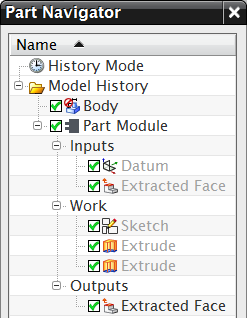
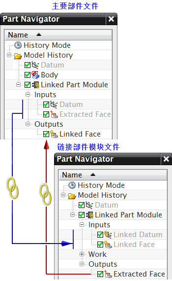

A Part Module exists either as an internal Part Module solely within the main part file, or as an external Linked Part Module that links the Part Module in the main part file to a corresponding Part Module in another part file using interpart WAVE references.
|
Internal Part Module |
External Linked Part Module |
|
|
 |
 |
When an internal Part Module is converted to an external Linked Part Module:
Objects in the Inputs collector are WAVE linked from the main part file to the Linked Part Module file.
The Work collector and the features that it contains are moved to the Linked Part Module file.
Objects in the Outputs collector are WAVE linked from the Linked Part Module file to the main part file.
Associativity is preserved between the main part file and the Linked Part Module file.